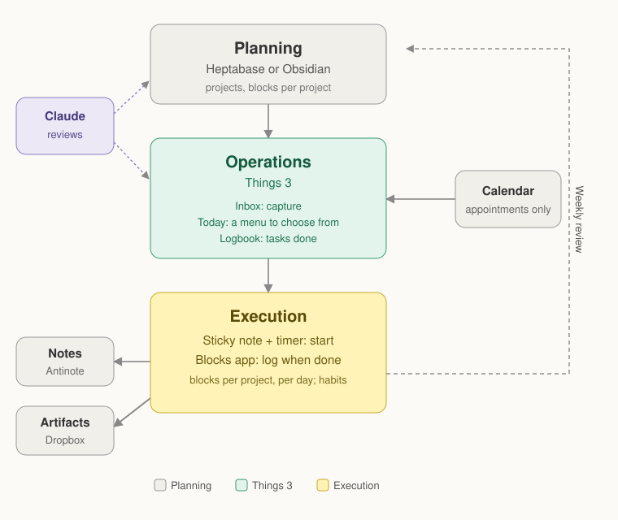

Layers of Operations
I keep switching tools. Mind maps, outliners, calendars with notes, notes with whiteboards, a paper planner. Planning works in any of them. What goes wrong is that one tool tries to do every job, or every tool does a bit of each.
So I designed it the way I’d design a system in an interview: requirements, entities, the flow, then the parts. The tools come last.
1. Requirements
What it must do
- Turn a project into tasks.
- Catch anything that comes up.
- Let me pick one thing to do now.
- Keep me on it.
- Keep what I make.
- Show me what I did.
How it must feel
- Visible, or it doesn’t exist for me.
- Low friction: capturing takes seconds.
- One home per thing, so I never wonder where something went.
- Forgiving: a missed day doesn’t break it.
- Cheap to switch tools inside a layer.
2. Entities
- Project: a want with a finish line.
- Task: one step of a project, or a loose to-do.
- Block: a timed stretch of work on one task. The unit I count, not hours.
- Note: what I jot while working.
- Artifact: what the work produces.
- Appointment: fixed in time, with someone else.
- Log entry: a done task or a finished block.
3. The flow
Three layers: Planning → Operations → Execution. Planning shapes projects and sizes them in blocks. Operations captures tasks and turns today into a menu. Execution starts a block on a sticky note and logs it when done. The weekly review sends the log back to Planning.
Inside them, the steps are Plan, Capture, Choose, Work, Log. Appointments feed Operations. Execution throws off notes and artifacts.

The count
Blocks are the primary count. Everything else is secondary.
- Plan: every project gets a number of blocks. That’s its size.
- Log: blocks done per project, against that number.
- Log: blocks done today.
Logging is one button with two types, blocks and habits. The block starts on the sticky note and gets logged once it’s done. Log the block, don’t start it.
Hours tell me how long I sat there. Blocks tell me how much got done. A number that isn’t time gives each project an end and a score I can watch go up.
4. The big choice: one app or layers
- One app for everything (notes, tasks and calendar together). Fewest places to look. But every all-in-one is weak somewhere, and the weak layer is the one I stop using.
- A tool for every job. Each part is the best. But ten apps means ten places to check, and what I don’t see stops existing.
- Chosen: layers, few apps. One job per layer, and one app holds the three layers I touch most (capture, choose, log). Few places, each good at its job.
5. The layers, with alternatives
Plan. Thinking about a whole project, and giving it a number of blocks.
- Options: an outliner, a canvas or mind map, paper, or planning inside the task app.
- Chosen: a canvas. I think in trees, and a canvas shows the whole project at once. Planning inside the task app floods my task list with half-thoughts.
Capture. Getting things out of my head.
- Options: write it wherever I am, keep several inboxes, or one inbox.
- Chosen: one inbox, one shortcut away. Working memory is the weak spot. If capture takes a decision about where, it doesn’t happen, and the fear of forgetting pulls me off the task.
Choose. Deciding what to do now.
- Options: time-block the calendar, a ranked list, or a short menu for today.
- Chosen: a menu. Time blocks break on the first slip, and then the whole day feels lost. A ranked list hands me one order, and I push back on orders. A menu gives me a choice where every option is worth doing.
Work. Doing the one thing.
- Options: work from the task app, a focus app, or a sticky note and a timer.
- Chosen: a sticky note and a timer. The task app shows the whole list, and the whole list pulls. A sticky note shows one thing. The timer gives the block an end. The block starts here, never from an app.
Notes.
- Options: notes inside tasks, in the planning tool, or in a quick-notes app.
- Chosen: a quick-notes app. It opens instantly and needs no decision about where. If a note grows into a project, it moves to the planning tool.
Artifacts.
- Options: keep them in the planning tool, or in one plain folder.
- Chosen: one folder. It outlives any app I switch away from.
Log. Blocks done, per project and per day, and habits.
- Options: a journal, logging blocks on the calendar, starting and stopping blocks in an app, or one log button.
- Chosen: one button, tapped after a block or a habit. Logging that takes effort is the first habit I drop, and starting from an app puts a screen in front of the start.
Calendar.
- Options: tasks and appointments together, or appointments only.
- Chosen: appointments only. A calendar full of tasks I didn’t do teaches me to ignore it, and then I miss the appointment too.
6. A review agent
Claude reviews two layers. It doesn’t do the work, and it doesn’t choose for me.
- Plan: reads the plan and asks what’s missing. Is there a finish line, a first step, a date? Is the project too big for the week?
- Operations: reads the inbox, today’s menu and the log. What’s been sitting untouched, is today’s menu too long, are blocks matching the plan?
Why an agent: the review is the step I skip, because it’s boring and has no deadline. A reviewer that shows up costs nothing to start.
7. My tools
v1
| Layer | Tool |
|---|---|
| Plan | Heptabase or Obsidian |
| Capture | Things 3 Inbox |
| Choose | Things 3 Today |
| Work | Sticky note + Antinote timer |
| Notes | Antinote |
| Artifacts | Dropbox |
| Log | Blocks app (blocks, habits); Things 3 Logbook for tasks |
| Calendar | Appointments only |
| Review | Claude |
v2
Built on the stack in Direction, Time, Energy:
- Visual life mapping
- Kanban
- Blocks and habits tracking
Why layers
A tool can be swapped. A layer can’t be skipped. If planning moves from one app to another, nothing else changes. Most of my tool switching was really a missing layer.